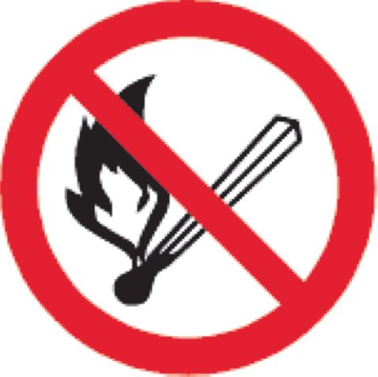
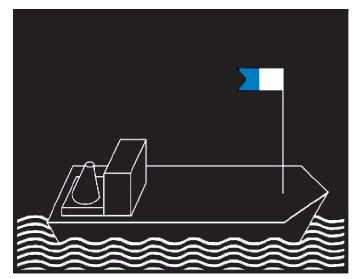
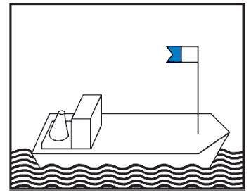

- 1.
Die nachstehenden Bilder dienen nur zur Erläuterung. Es ist stets vom Wortlaut der Verordnung auszugehen, der allein Geltung hat.
- 2.
Schubverbände, deren Länge 110,00 m nicht überschreitet, gelten als einzeln fahrende Fahrzeuge von gleicher Länge.
- 3.
Zeichenerklärung:
... nicht darstellbare Zeichen
(Fundstelle: Anlageband zum BGBl. II Nr. 38 v. 16.9.1997, S. 75)
Ein Licht, das dem Blick des Beschauers tatsächlich entzogen ist, ist mit einem Punkt in der Mitte versehen.
Bilder mit schwarzem Hintergrund enthalten die Lichter bei Nacht.
... nicht darstellbares Bild 1
(Fundstelle: Anlageband zum BGBl. II Nr. 38 v. 16.9.1997, S. 76)
- § 3.01
Begriffsbestimmungen und Anwendungen
Nr. 1: Der Horizontbogen, über den das Topplicht, die Seitenlichter und das Hecklicht sichtbar sind
... nicht darstellbares Bild 2
- § 3.08
Einzeln fahrende Fahrzeuge mit Maschinenantrieb
Nr. 2: Länge bis 110,00 m
... nicht darstellbares Bild 3
- § 3.08
Einzeln fahrende Fahrzeuge mit Maschinenantrieb
Nr. 1: Länge mehr als 110,00 m
... nicht darstellbare 2 Bilder 4
- § 3.09
Schleppverbände
Nr. 1: Fahrzeug mit Maschinenantrieb, das allein an der Spitze des Verbandes fährt
... nicht darstellbare 2 Bilder 5
(Fundstelle: Anlageband zum BGBl. II Nr. 38 v. 16.9.1997, S. 77)
- § 3.09
Schleppverbände
Nr. 2: Die Fahrzeuge mit Maschinenantrieb, die zu mehreren nebeneinander an der Spitze des Verbandes fahren
... nicht darstellbare 2 Bilder 6
- § 3.09
Schleppen
Nr. 3: Geschleppte Fahrzeuge
... nicht darstellbare 2 Bilder 7
- § 3.09
Schleppen
Nr. 3: Anhanglänge des Verbandes über 110,00 m
... nicht darstellbare 2 Bilder 8
- § 3.09
Schleppen
Nr. 3 Buchstabe b: Anhanglänge des Verbandes mit mehr als zwei längsseits verbundenen Fahrzeugen
... nicht darstellbare 2 Bilder 9
(Fundstelle: Anlageband zum BGBl. II Nr. 38 v. 16.9.1997, S. 78)
- § 3.09
Schleppen
Nr. 4: Das Fahrzeug als letzte Anhanglänge des Schleppverbandes
... nicht darstellbare 2 Bilder 10
- § 3.09
Schleppen
Nr. 4: Mehrere Fahrzeuge als letzte Anhanglänge des Schleppverbandes
... nicht darstellbares Bild 11
- § 3.10
Schubverbände
Nr. 1: Schubverband
... nicht darstellbares Bild 12
- § 3.10
Schubverbände
Nr. 1 Buchstabe c: Außer dem schiebenden Fahrzeug zwei oder mehr von hinten in ganzer Breite sichtbare Fahrzeuge
... nicht darstellbares Bild 13
(Fundstelle: Anlageband zum BGBl. II Nr. 38 v. 16.9.1997, S. 79)
- § 3.10
Schubverbände
Nr. 2: Zwei schiebende Fahrzeuge
... nicht darstellbare 2 Bilder 14
- § 3.10
Schubverbände
Nr. 3 und 4: Geschleppte Schubverbände
... nicht darstellbares Bild 15
- § 3.11
Gekuppelte Fahrzeuge
Nr. 1: Zwei Fahrzeuge mit Maschinenantrieb
... nicht darstellbares Bild 16
- § 3.11
Gekuppelte Fahrzeuge
Nr. 1: Ein Fahrzeug mit Maschinenantrieb und ein Fahrzeug ohne Maschinenantrieb
... nicht darstellbares Bild 17
(Fundstelle: Anlageband zum BGBl. II Nr. 38 v. 16.9.1997, S. 80)
- § 3.12
Fahrzeuge unter Segel
... nicht darstellbares Bild 18
- § 3.13
Kleinfahrzeuge
Nr. 1 Buchstabe a, b und c: Kleinfahrzeuge mit Maschinenantrieb
... nicht darstellbares Bild 19
- § 3.13
Kleinfahrzeuge
Nr. 1 Buchstabe d, e und f: Kleinfahrzeug mit Maschinenantrieb mit Seitenlichtern unmittelbar nebeneinander oder in einer einzigen Laterne
... nicht darstellbares Bild 20
- § 3.13
Kleinfahrzeuge
Nr. 1 Buchstabe f: Kleinfahrzeug mit Maschinenantrieb mit einem von allen Seiten sichtbaren Licht
... nicht darstellbares Bild 21
(Fundstelle: Anlageband zum BGBl. II Nr. 38 v. 16.9.1997, S. 81)
- § 3.13
Kleinfahrzeuge
Nr. 3: Geschleppt oder längsseits gekuppelt
... nicht darstellbares Bild 22
- § 3.13
Kleinfahrzeuge
Nr. 4: Unter Segel fahrend
... nicht darstellbares Bild 23
- § 3.13
Kleinfahrzeuge
Nr. 4: Unter Segel fahrend mit einer einzigen Laterne am Topp
... nicht darstellbares Bild 24
- § 3.13
Kleinfahrzeuge
Nr. 4: Unter Segel fahrend mit einem von allen Seiten sichtbaren Licht und bei Annäherung anderer Fahrzeuge ein zweites Licht zeigend
... nicht darstellbares Bild 25
(Fundstelle: Anlageband zum BGBl. II Nr. 38 v. 16.9.1997, S. 82)
- § 3.13
Kleinfahrzeuge
Nr. 5: Einzeln weder mit Antriebsmaschine noch unter Segel fahrend
... nicht darstellbare 2 Bilder 26
- § 3.13
Kleinfahrzeuge
Nr. 1 und 6: Unter Segel und gleichzeitig mit einer Antriebsmaschine fahrend
... nicht darstellbare 2 Bilder 27a und Bild 27b
- § 3.14
Fahrzeuge bei Beförderung bestimmter gefährlicher Güter
Nr. 1: Bestimmte entzündbare Stoffe nach ADN
... nicht darstellbare 2 Bilder 28a und Bild 28b
(Fundstelle: Anlageband zum BGBl. II Nr. 38 v. 16.9.1997, S. 83)
- § 3.14
Fahrzeuge bei Beförderung bestimmter gefährlicher Güter
Nr. 2: Bestimmte gesundheitsschädliche Stoffe nach ADN
... nicht darstellbare 2 Bilder 29
- § 3.14
Fahrzeuge bei Beförderung bestimmter gefährlicher Güter
Nr. 3: Bestimmte explosive Stoffe nach ADN
... nicht darstellbare 2 Bilder 30
- § 3.14
Fahrzeuge bei Beförderung bestimmter gefährlicher Güter
Nr. 4: Schubverband
... nicht darstellbare 2 Bilder 31
(Fundstelle: Anlageband zum BGBl. II Nr. 38 v. 16.9.1997, S. 84)
- § 3.14
Fahrzeuge bei Beförderung bestimmter gefährlicher Güter
Nr. 4: Gekuppelte Fahrzeuge
... nicht darstellbare 2 Bilder 32
- § 3.14
Fahrzeuge bei Beförderung bestimmter gefährlicher Güter
Nr. 5: Schubverbände mit zwei schiebenden Fahrzeugen
... nicht darstellbares Bild 33
- § 3.15
Fahrzeuge, die zur Beförderung von mehr als 12 Fahrgästen zugelassen sind und deren Länge unter 20,00 m liegt
... nicht darstellbares Bild 34
- § 3.16
Fähren
Nr. 1: Nicht frei fahrende Fähren
... nicht darstellbares Bild 35
(Fundstelle: Anlageband zum BGBl. II Nr. 38 v. 16.9.1997, S. 85)
- § 3.16
Fähren
Nr. 2: Oberster Buchtnachen oder Döpper bei einer Gierfähre am Längsseil
... nicht darstellbares Bild 36
- § 3.16
Fähren
Nr. 3: Frei fahrende Fähren
... nicht darstellbares Bild 37
- § 3.17
Fahrzeuge, die einen Vorrang besitzen
... nicht darstellbare 2 Bilder 38
- § 3.18
Manövrierunfähige Fahrzeuge
... nicht darstellbares Bild 39
(Fundstelle: Anlageband zum BGBl. II Nr. 38 v. 16.9.1997, S. 86)
- § 3.19
Schwimmkörper und schwimmende Anlagen
... nicht darstellbares Bild 40
- § 3.20
Fahrzeuge beim Stilliegen
Nr. 1: Fahrzeuge mit Ausnahme der Kleinfahrzeuge, Fähren und schwimmenden Geräte bei der Arbeit
... nicht darstellbares Bild 41
- § 3.20
Fahrzeuge beim Stilliegen
Nr. 2: Kleinfahrzeuge mit Ausnahme der Beiboote
... nicht darstellbare 2 Bilder 42
- § 3.21
Stilliegende Fahrzeuge bei Beförderung bestimmter gefährlicher Güter
... nicht darstellbare 2 Bilder 43
(Fundstelle: Anlageband zum BGBl. II Nr. 38 v. 16.9.1997, S. 87)
- § 3.21
Stilliegende Fahrzeuge bei Beförderung bestimmter gefährlicher Güter: Schubverbände
... nicht darstellbare 2 Bilder 44
- § 3.21
Stilliegende Fahrzeuge bei Beförderung bestimmter gefährlicher Güter: Gekuppelte Fahrzeuge
... nicht darstellbares Bild 45
- § 3.22
Fähren, die an ihrer Landestelle stilliegen
Nr. 1: Nicht frei fahrende Fähren
... nicht darstellbares Bild 46
- § 3.22
Fähren, die an ihrer Landestelle stilliegen
Nr. 2: Frei fahrende Fähren
... nicht darstellbares Bild 47
(Fundstelle: Anlageband zum BGBl. II Nr. 38 v. 16.9.1997, S. 88)
- § 3.23
Schwimmkörper und schwimmende Anlagen
... nicht darstellbare 2 Bilder 48
- § 3.24
Fischereifahrzeuge mit Netzen oder Auslegern
... nicht darstellbare 2 Bilder 49a und Bild 49b
- § 3.25
Schwimmende Geräte bei der Arbeit sowie festgefahrene oder gesunkene Fahrzeuge
Nr. 1 Buchstabe a: Durchfahrt frei an beiden Seiten
... nicht darstellbare 2 Bilder 50a und Bild 50b
(Fundstelle: Anlageband zum BGBl. II Nr. 38 v. 16.9.1997, S. 89)
- § 3.25
Schwimmende Geräte bei der Arbeit sowie festgefahrene oder gesunkene Fahrzeuge
Nr. 1 Buchstabe a und b: Durchfahrt frei an einer Seite
... nicht darstellbare 2 Bilder 51
- § 3.25
Schwimmende Geräte bei der Arbeit sowie festgefahrene oder gesunkene Fahrzeuge
Nr. 1 Buchstabe c: Schutz gegen Wellenschlag; Durchfahrt frei an beiden Seiten
... nicht darstellbare 2 Bilder 52
- § 3.25
Schwimmende Geräte bei der Arbeit sowie festgefahrene oder gesunkene Fahrzeuge
Nr. 2: Festgefahrene oder gesunkene Fahrzeuge; Durchfahrt frei an einer Seite
... nicht darstellbare 2 Bilder 53
(Fundstelle: Anlageband zum BGBl. II Nr. 38 v. 16.9.1997, S. 90)
- § 3.26
Fahrzeuge und Schwimmkörper, deren Anker die Schiffahrt gefährden können
Nr. 1 und 3: Fahrzeuge und Anker
... nicht darstellbare 2 Bilder 54
- § 3.26
Fahrzeuge, Schwimmkörper und schwimmende Anlagen, deren Anker die Schiffahrt gefährden können
Nr. 2 und 3: Schwimmkörper, schwimmende Anlagen und deren Anker
... nicht darstellbare 2 Bilder 55
- § 3.26
Fahrzeuge, Schwimmkörper und schwimmende Anlagen, deren Anker die Schiffahrt gefährden können
Nr. 4: Anker schwimmender Geräte
... nicht darstellbare 2 Bilder 56
- § 3.27
Fahrzeuge der Überwachungsbehörde
... nicht darstellbare 2 Bilder 57
(Fundstelle: Anlageband zum BGBl. II Nr. 38 v. 16.9.1997, S. 91)
- § 3.28
Fahrzeuge, die Arbeiten in der Wasserstraße ausführen
... nicht darstellbare 2 Bilder 58
- § 3.29
Schutz gegen Wellenschlag
... nicht darstellbare 2 Bilder 59
| Nachtbezeichnung | Bild | Tagbezeichnung |
| 60 | |
| § 3.31 Verbot, das Fahrzeug zu betreten |
| Nachtbezeichnung | Bild | Tagbezeichnung |
|  | 60 | |
| § 3.32 Verbot zu rauchen, ungeschütztes Licht oder Feuer zu verwenden |
... nicht darstellbare 2 Bilder 62
- § 3.33
Verbot des Stillliegens nebeneinander
- § 11.07
Nummer 8 Buchstabe a Sorgfaltspflicht beim Bunkern von Flüssigerdgas (LNG)
... nicht darstellbare 2 Bilder 63
| Nachtbezeichnung | Bild | Tagbezeichnung |
|  | 65 |  |
| § 3.34: Zusätzliche Bezeichnung der Fahrzeuge beim Einsatz von Tauchern |
- § 6.04
Begegnen
Nr. 3: Begegnen an der Steuerbordseite
§ 2.06 Kennzeichnung der Fahrzeuge, die Flüssigerdgas (LNG) als Brennstoff nutzen